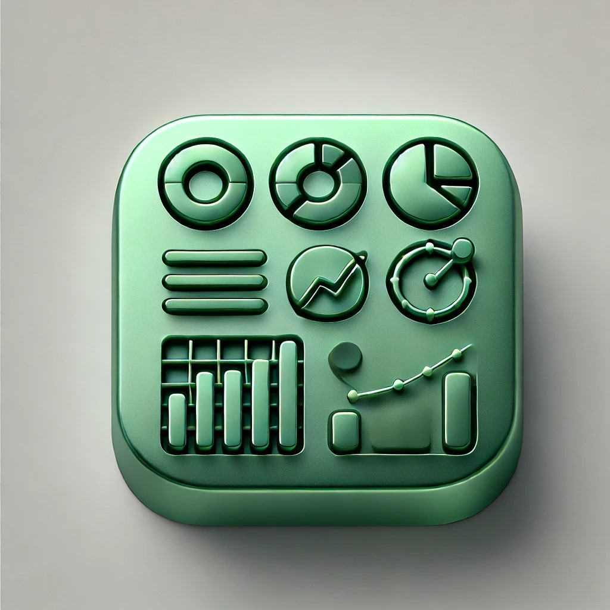
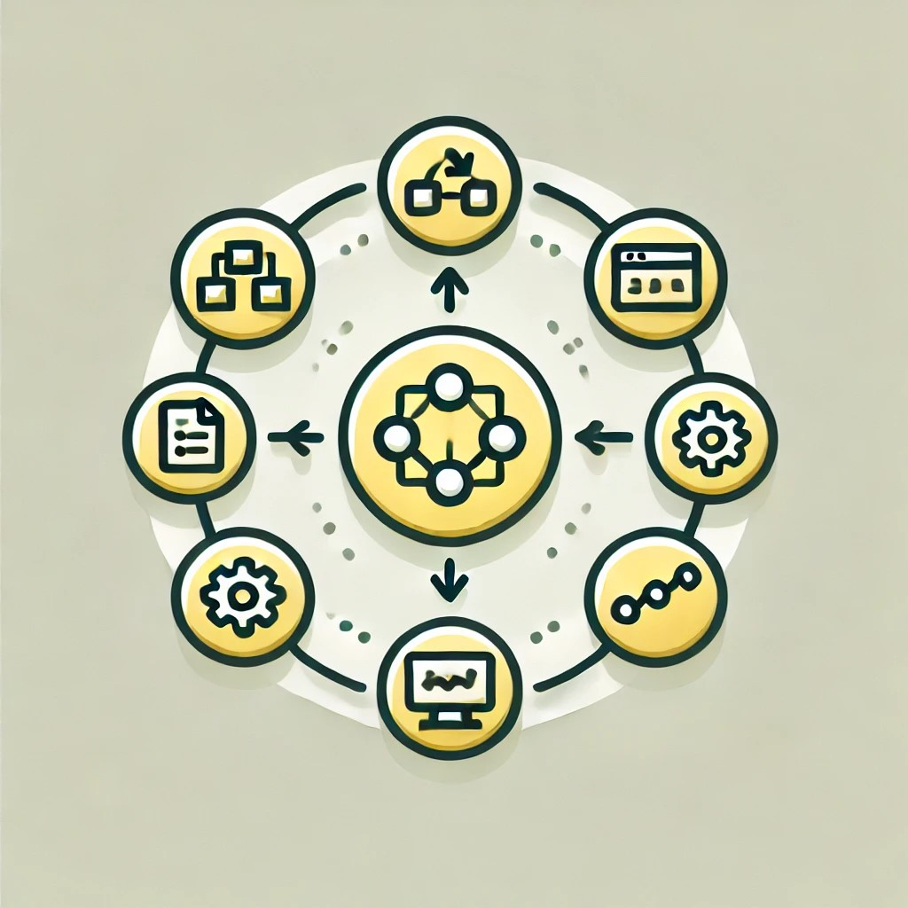
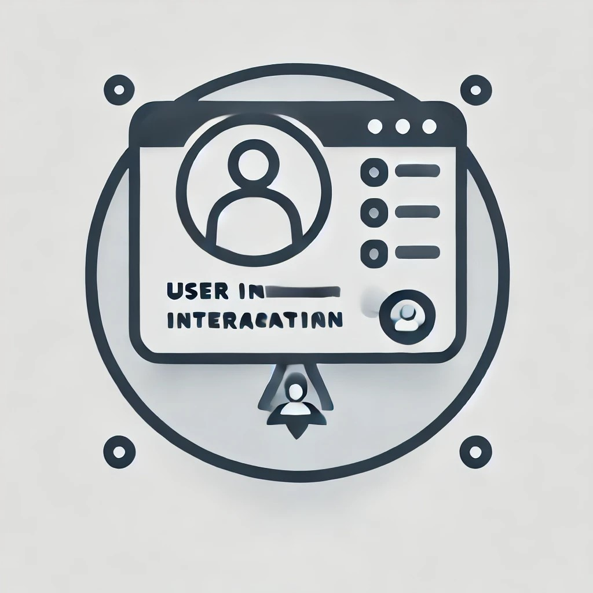

Origen de Datos
Configuración y carga de datos

Análisis Predictivo
Interpretación y predicciones
Motor de Pruebas
Ejecución de pruebas automáticas

Orquestación del Ciclo de Vida
Despliegue en ambientes de prueba y producción

Interacción del Usuario
Visualización de incidencias y monitoreo
Módulo de Innovación
Proyectos y mejoras innovadoras